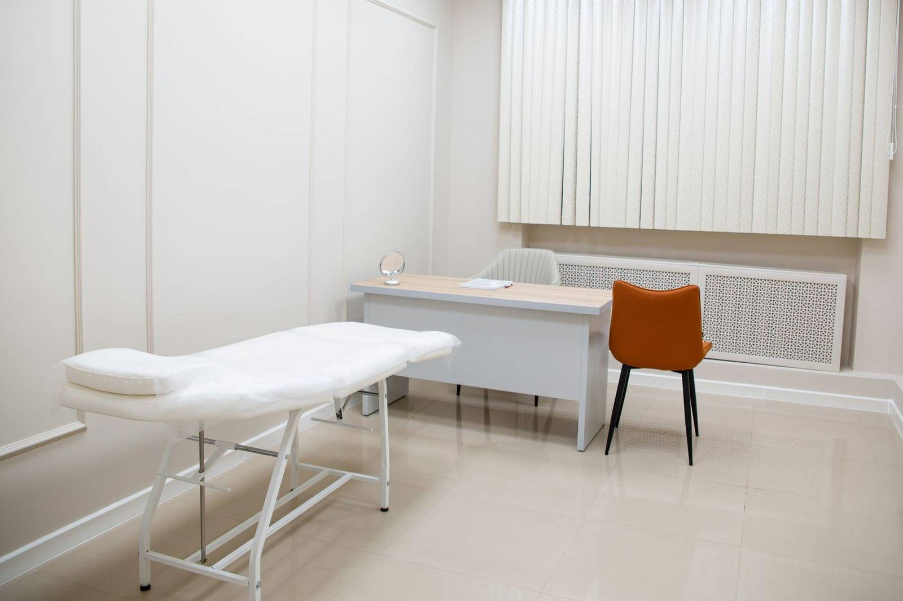

I.
Strategy Intensive
One focused session on the problem costing you the most, and a written plan to fix it.
Priority diagnosis · Action planning · Quick wins · Leadership alignment
Learn more →For growing businesses, with a specialty in healthcare: the numbers, the systems, and the people, built to work as one.
Budgets and P&L, staffing and scheduling, and a culture where teams feel steady, supported, and invested in the work.
✦13+ years in healthcare operations leadership
When the operation is healthy, everything it touches can be too.
We bring AI and modern data tools into the operation, so leaders decide with real numbers and teams spend less time on busywork.

Clear metrics, honest dashboards, and AI where it genuinely saves time.
Growth multiplies whatever system you already have.
We take on a small number of practices at a time, so each one has our full attention. You work directly with Danielle, from the first conversation to the last rollout.
The work is practical: the budget that finally makes sense, the schedule that stops running late, the standard every location follows. Built alongside your team, and measured until it holds.
Meet Danielle →Five engagements, because a plan nobody implements is only a document, a system nobody measures quietly drifts back, and neither lasts without a team that cares.
One focused session on the problem costing you the most, and a written plan to fix it.
Priority diagnosis · Action planning · Quick wins · Leadership alignment
Learn more →
Where most clients beginA clear read on where time and revenue are leaking, ranked by what to fix first.
Scheduling & patient flow · No-show & cancellation review · Staffing & capacity models · Workflow review · KPI baseline · Compliance readiness · 30/60/90-day plan
Learn more →The fixes, built and rolled out with your team, so they hold after we step back.
Automated confirmations & reminders · Waitlist backfill · AI-assisted documentation · Multi-site standards · SOPs & training · Systems & workflow design · Expansion playbooks
Learn more →
Senior operations leadership on your team, without a full-time executive hire.
Budget management · P&L oversight · Workforce capacity planning · Power BI & SSRS dashboards · KPI scorecards · People-centered leadership
Learn more →A people-first culture, built into how the practice runs, so engagement lasts beyond the kickoff.
Engagement listening · Leadership rhythms · Onboarding & recognition · Burnout-aware workflows · Team rituals · Manager coaching
Learn more →Operations and culture are the same work. When the day runs calmly, people have room to care, and when people feel cared for, they bring their best to the business. We build both, together.
Short, steady huddles and one-on-ones, so leaders stay close to the team and small issues never grow quiet.
A first ninety days that makes people feel welcome and capable, and recognition that is specific, timely, and sincere.
Schedules, handoffs, and documentation designed to reduce rushing, end-of-day charting, and the slow build of burnout.
Simple pulse check-ins and stay conversations, with every theme answered by a visible next step.
Small, mindful moments, from a calm start to the day to shared wins, that turn a staff into a team.
These aren't people problems. They're system problems, and systems can be rebuilt.
The numbers, the workflows, and the people each shape the others, and together they shape patient care. So we look at all of them, and build the systems, teams, and strategies that keep the whole practice well.
A whole-practice review of how things actually run: scheduling, patient flow, staffing, workflows, reporting, and how your team is really doing.
A practical roadmap, plus the playbooks, roles, KPIs, and team rhythms to support it, built for your people and your locations.
A hands-on rollout with your staff, so new workflows are trained, adopted, and measured.
Live dashboards, KPI scorecards, budget and P&L oversight, and regular check-ins on team wellbeing, so what works keeps working.
Owner-led practices ready to step out of daily firefighting.
Groups that need consistent operations across providers and teams.
Dermatology, aesthetics, and other specialty organizations with high-volume scheduling and patient flow.
Groups expanding into new markets that need one operating standard, one KPI scorecard, and clear P&L accountability.

A self-scored checklist across scheduling, patient flow, staffing, workflows, reporting, and compliance readiness. Select each point to see what it asks.
Do your schedule templates match how each provider actually works, and can you see open capacity before the day starts?
What we look at: template design, visit lengths, block rules, and how quickly cancellations get backfilled.
Your request is on its way to Danielle. She'll send the assessment to your inbox.
Something went wrong sending your request. Please try again in a moment.
Danielle will send the assessment, plus an occasional operations insight. Unsubscribe anytime.
“I believe healing starts long before a patient reaches the exam room. It starts with how a practice runs: whether the team feels supported, whether the day has room to breathe, and whether leaders can see what matters. I do this work to help practices, their people, and their patients heal and thrive.”
Danielle Lamb, Founder
Danielle Lamb brings 13+ years in healthcare operations leadership to every engagement. Her work centers on the parts of a practice that decide whether it scales: budgets and P&L, multi-site operations, staffing and scheduling, and the systems that tie them together.
She has directed operational performance across a multi-site portfolio of more than $15M in revenue, and she leads with people in mind: clear accountability, engaged teams, and workloads people can sustain. Her approach is holistic: build systems people can follow, leaders can measure, and teams can sustain.
We treat your practice as one connected system. Budgets, schedules, staffing, culture, and patient experience all affect each other, so we never fix one in isolation. The goal is a practice that is financially sound, calm to work in, and better for the patients it serves.
No. We strengthen your manager and team with clear systems, KPIs, and support, so the improvements hold after we step back.
Yes. Budget management and P&L leadership sit at the center of Danielle's experience. We connect every operational fix to the numbers: budget targets, variance, and the return on growth initiatives.
We listen first, through short conversations and pulse check-ins with your team. Then we build the rhythms that keep people engaged: leadership huddles, onboarding and recognition, calmer workflows, and simple team rituals. It works on its own or alongside any operations engagement, because a calmer day and a more engaged team come from the same work.
Yes. We look at how appointments are confirmed, how patients are reminded, and how quickly an open slot gets backfilled from a waitlist. Then we build a process that protects schedule integrity, using the systems you already have wherever we can.
We start with workforce capacity planning: matching staffing to patient demand and provider schedules, and setting coverage rules for the gaps. Where documentation is the bottleneck, we help you evaluate and roll out AI-assisted documentation so providers can keep seeing patients.
A small set of KPIs your leaders review on a set schedule, built into dashboards in tools like Power BI and SSRS, and turned into clear recommendations, not just charts.
Yes. Most work is remote, with on-site visits when a rollout calls for it.
Independent practices, physician groups, and multi-location organizations that are feeling the strain of growth.
With a free 30-minute discovery call. If there's a fit, most clients begin with the Practice Operations Assessment.

Book a free 30-minute discovery call. Tell us what's happening across your operations, your team, and your patient experience, and Danielle will give you an honest read on where she'd start, and whether we're the right fit.
She reads every message personally and will be in touch to find a time for your discovery call.